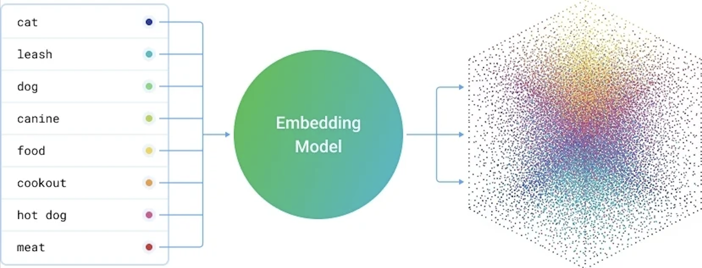
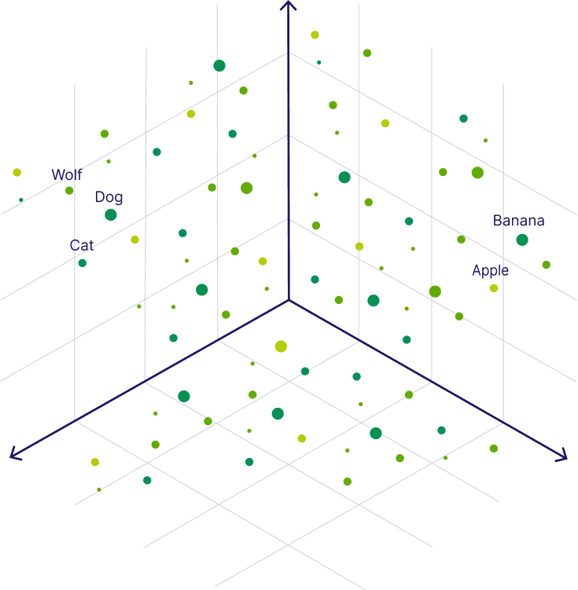

I'm sure most of you have noticed this at some point. You ask an AI a question and the response feels disappointingly vague. You ask the same question again but this time with a bit more structure or a few extra details, and suddenly the response is noticeably better.
But that naturally raises a few questions that I think a lot of people quietly wonder about.
What does an ideal prompt actually look like? What information should I be including? How should I structure what I'm asking? Do longer prompts work better or is shorter cleaner?
I had the same questions. So I went looking for answers. Read through quite a bit of research on how language models work, ran a lot of experiments with different prompt styles, and hit more than a few dead ends along the way.
What I eventually found was something I didn't expect. The prompts that worked best weren't the most technical ones. They weren't the ones with clever formatting or special keywords. The ones that consistently gave great output were simply the well communicated ones. Clear context, a defined audience, a specific goal, and enough detail for the model to actually work with.
That observation led me toward an interesting parallel. Because those are also exactly the things that make a good story work.
The more I sat with that connection, the more sense it made. And after a lot of testing and quite a few frustrating outputs along the way, here is what I've come to understand about why prompting and storytelling are really the same skill wearing different clothes.
What's Actually Happening When You Send a Prompt
Understanding the mechanics here changed how I think about prompts entirely. So let me share the part that I found most useful, without going too deep into the weeds.
When you send a message to a language model, the model doesn't read your words the way we do. Every word gets converted into a number, a long precise number called a vector. Think of it as each word receiving its own coordinate inside a massive mathematical space. Like a GPS address, but for meaning.

What makes this interesting is that words with similar meanings end up close to each other in that space. "Happy" and "joyful" are neighbours. "Invoice" and "receipt" share a street. The model has essentially learned the geography of language through billions of examples, and it uses that geography to figure out what you're asking.

When you write a prompt, your words don't just get individual coordinates. They form a cluster together. A neighbourhood of connected meaning that signals to the model, this is the territory we're working in.
A specific, well structured prompt creates a tight cluster. The model has a clear address and navigates there confidently. A vague prompt like "write something about leadership" scatters that cluster across an enormous area. The model ends up somewhere in the middle of it all, producing something that technically fits the topic but doesn't really fit what you needed.
This isn't a flaw in the model. It's geometry. And once I understood that, I stopped being frustrated with vague outputs and started being more precise with my inputs.
Know Who You're Writing For
Going through the research on how models generate text, one thing became very clear to me. Audience specification is one of the most underused levers in prompting.
When you tell a model who it's writing for, you're not just adding a polite detail. You're actively shifting which part of its learned knowledge it draws from. "Write for someone new to this topic" pulls the output toward simpler vocabulary, more analogies, more patient explanation. "Write for a senior technical audience" pulls it toward precision, assumed knowledge, and efficiency. Same question, completely different clusters, very different outputs.
Without that specification, the model defaults to something generically middle-of-the-road. Not wrong exactly, but not right for anyone in particular either.
Doraemon is a good way to think about this. The show has been running since 1973 and has somehow always felt right for its audience, whether that's a seven year old watching it on a Saturday morning or an adult revisiting it years later with a strange wave of nostalgia. Fujiko F. Fujio didn't write Doraemon for a vague general audience. He wrote it for children who were struggling, a bit lost, and needed to believe that tomorrow could be better than today. That specific emotional target shaped every story, every gadget, every interaction between Nobita and Doraemon. The show knew exactly who it was talking to, and that's a big part of why it still works.
Prompts need that same clarity. When you tell a model who it's writing for, the output shifts in ways that are hard to achieve any other way.
"Explain quantum entanglement."
What comes back is usually something encyclopaedia-like. Covers the facts, serves nobody particularly well.
"Please explain quantum entanglement to someone who loves science but hasn't studied advanced physics. One simple everyday analogy, no equations, and make it feel genuinely interesting rather than like a definition."
After testing variations of this kind of prompt many times, the difference in output quality when you specify the audience is consistent and significant. It's one of the first things I now add to any prompt where the output needs to land with a specific person.
Build the World Before You Tell the Story
This is something I kept bumping into when I was studying how context affects model output. The more coherent and detailed the context in a prompt, the better the cluster it forms, and the more focused the response.
Pokémon is a surprisingly good example of why this matters. When Satoshi Tajiri built that world in the mid-90s, he didn't just design creatures. He built an entire system with internal logic. Eighteen types with consistent rules. Different regions with distinct personalities. A society with its own norms and institutions. Every piece fits with every other piece. And because of that, the world feels real and navigable.
Good prompts need that same internal coherence. Every detail you add is another coordinate that tightens the cluster. "Sustainable clothing brand, millennial audience, recycled materials, warm idealistic tone" gives the model a well-defined neighbourhood with clear edges. The output reflects that precision.
Remove those details and you're left with a loose, scattered cluster. The model fills the gaps with whatever is most statistically average for that topic. Which is almost never what you actually wanted.
"Write me a marketing email for my product."
No context, no audience, no tone. The model writes the most generic version of a marketing email that exists.
"I run a small sustainable clothing brand for environmentally conscious millennials. Please write a marketing email announcing our new collection made from recycled ocean plastic. The tone should feel warm and genuine, like a brand that truly believes in what it's doing. End with a clear call to action to visit our website."
Through my own testing, adding this kind of contextual detail consistently moves the output from serviceable to actually useful. The model isn't smarter with more context. It's just better directed.
Show an Example, Don't Just Describe One
One of the things I dug into quite a bit was few-shot learning, which is essentially what happens when you give a model examples alongside your request. And the results, both in the research and in my own experiments, are pretty clear.
When you include an example of what you want, your example and your task start clustering together in the same neighbourhood. The model can see the destination because you've shown it something that already lives there. Without an example, it's navigating from your description alone. With one, it has a landmark.
The real world equivalent is social proof in storytelling. Instead of telling someone a path leads somewhere good, you show them someone who already walked it. "She was exactly where you are. She made this choice. Here's what happened." The example does work that no amount of description can match.
"Summarize these customer reviews into one paragraph."
A summary will come back. Whether it matches the tone, length, or structure you needed is essentially luck at this point.
"Please summarize the following customer reviews into one paragraph. Here's the kind of output I'm looking for:
Example: Customers really appreciated the fast delivery and helpful service. A few mentioned the packaging could be improved, but overall most said they'd happily buy again.
Could you do the same for these reviews? [paste reviews here]"
In my testing, adding even one well-chosen example cuts down revision cycles significantly. The model stops guessing at what "good" looks like because you've already shown it.
Specificity Is Not Demanding, It's Necessary
Something I noticed after analyzing a lot of my own failed prompts is that most of them were vague in ways I didn't even register at the time. I thought I was being clear. Looking back, I was gesturing at a topic and hoping the model would somehow read my mind.
Every specific constraint you add trims the cluster of possible outputs. "Opinion piece" removes poetry and news reports. "300 words" removes essays. "General audience" removes academic writing. Each instruction carves the space down further until there's really only one neighbourhood left to write from. That's when the output starts feeling like it came from someone who understood the brief.
"Write something about climate change."
Technically a request. Practically, not enough to work with.
"Could you write a 300-word opinion piece for a general audience? The argument is that individual lifestyle changes alone can't address climate change and that systemic policy reform is what's actually needed. Confident but not preachy tone, and it would be great if it opened with a surprising statistic."
The difference in what comes back is not subtle. Specificity is one of the simplest things to improve in a prompt and one of the highest-return changes you can make.
Build Verification Into the Prompt Itself
This one came from a mistake I made on an actual project. I was using a model to pull out details from a set of documents and the output sounded authoritative and well-structured. I used it. Two specific facts turned out to be wrong in ways that mattered.
After that I started thinking more carefully about how models generate responses. They don't retrieve verified facts. They produce the most statistically likely continuation of your prompt based on training data. Confident-sounding and accurate are not the same thing, and the model has no way of flagging the difference unless you ask it to.
So now I ask it to.
"Tell me the key provisions of 42nd Constitutional Ammendment."
Sounds fine. The output will be largely accurate with a few things that might not hold up to scrutiny, and you won't easily know which parts those are.
"Could you walk me through the key provisions of 42nd Constitutional Ammendment.? After your answer, please flag anything you're not fully certain about and suggest where I should verify it. And feel free to ask if there's a specific part I'd like to go deeper on."
Building verification into the prompt changes the dynamic entirely. The model surfaces its own uncertainty rather than smoothing over it. After making this a regular habit, I've caught several things that would have been quietly wrong in the final output.
Why Certain Words Carry More Weight
The last piece of this, and the one that tied everything together for me, comes from how attention mechanisms actually work in transformer-based models. This is the model architecture on which all the LLMs like ChatGPT, Claude are based on.
Simply put the model doesn't treat every word in your prompt with equal weight. It assigns more attention to words that seem to carry more signal, things like your goal, your audience, your constraints, and the format you need. These become anchors that the model keeps referring back to as it generates a response.
Think of it this way. If your prompt says "write a short email for a frustrated customer who received a damaged product", the words "short", "frustrated customer" and "damaged product" become strong anchors. The model holds onto them throughout and the output stays focused around those specific signals.
But if your prompt simply says "write a customer email", there are no real anchors to hold onto. The model drifts toward the most average, most generic version of a customer email it has ever seen. Which is usually not what anyone actually needed.
The same thing plays out with tone and format. A prompt that says "explain this in simple conversational language like you're talking to a friend" gives the model a clear anchor for how to write. A prompt that just says "explain this" leaves that anchor missing entirely and the model defaults to something formal and textbook-like because that's where the statistical average sits.
When your prompt has several strong, specific, coherent anchor words, the generation stays focused throughout. When your prompt is vague or scattered, those anchors are weak and the output drifts in whatever direction the training data most commonly goes. Which, more often than not, lands somewhere safe, average, and not particularly useful.
A well-designed poster works on the same principle. Your eye doesn't read every element equally. It goes to the headline, then the key image, then the supporting detail. A good designer puts the most important things where attention naturally lands first. Prompts respond to the same logic.
"Write a blog post about artificial intelligence and also make sure you don't use technical jargon because my audience isn't technical and keep it under 500 words and make the tone optimistic."
All the right information is there. But it's tangled together with no hierarchy. Nothing stands out as load-bearing.
"Could you write a 500-word blog post about artificial intelligence for a general non-technical audience? A few things that are important here: please avoid all technical jargon, use simple everyday comparisons for complex ideas, and keep the tone warm and optimistic rather than alarming. The no-jargon part is especially important for this particular piece."
The constraints are separated and clear. The most critical one is flagged explicitly. After running versions of this comparison many times across different topics, prompts structured this way consistently outperform the tangled version even when the underlying information is identical.
What All of This Comes Down To
After all the reading and testing and going back to fix outputs that didn't land, the thing I keep coming back to is this.
The quality of what you get from a language model is a reflection of how clearly you communicated what you needed. That's it. The model isn't holding out on you. It's working with exactly what you gave it.
And the skills that make a prompt clear, knowing your audience, building real context, showing examples, being specific, anchoring your most important constraints, are the same skills that have always made communication work. The tool is new. The craft underneath it isn't.
I'm still learning and still running into prompts that don't work the way I expected. But having this framework to come back to has made the process feel a lot less like guesswork and a lot more like something you can actually get better at.